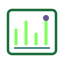

Instala VS Code y Python
Prepara tu computadora desde cero y verifica que Python realmente funciona antes de comenzar.
Ruta de Portafolio Profesional
Aprende Django paso a paso, construye proyectos reales y termina el año con un portafolio publicado en GitHub Pages.
Empiezas instalando tus herramientas, construyes aplicaciones Django en tu computadora y cierras el semestre con evidencia profesional: repositorios, capturas, README y demo.

Cinco rutas base para instalar herramientas, entender Django y resolver errores. Marca tus pasos y vuelve cuando quieras.
Prepara tu computadora desde cero y verifica que Python realmente funciona antes de comenzar.
Aprende por qué existe un entorno virtual, créalo correctamente e instala Django sin contaminar otros proyectos.
Conecta proyecto, aplicación, URL, vista y template hasta mostrar tu primera página real en el navegador.
Construye una aplicación de tareas con usuarios, correo, nombre, contraseña, autenticación y animaciones.
Aprende a diagnosticar fallos de instalación, rutas, templates, migraciones, CSRF, módulos y servidor.
Primero dominas la base. Después construyes evidencia profesional que puedes mostrar a un jurado, una universidad o un entrevistador.
Instalas herramientas, creas entornos, entiendes el flujo URL-vista-template y resuelves errores sin panicarse.
El To-Do + Login es tu primera app real: autenticación, modelos, formularios y CRUD con dueño de datos.
Construyes más apps, organizas información, resuelves problemas tipo laboral y documentas todo para tu portafolio.
Publicas un portafolio en GitHub Pages con proyectos, README y demo listos para mostrar.
Cuatro fases. Cada una responde a una pregunta concreta: ¿puedo construir, organizar, resolver y presentarme?
Fase 1
Aprendes a crear aplicaciones pequeñas pero reales: login, CRUD, formularios y validaciones.
Resultado: demuestras que puedes crear apps Django funcionales con usuario autenticado.
Ver detalle de faseFase 2
Practicas cómo guardar, filtrar, ordenar y publicar información como una aplicación profesional.
Resultado: sabes modelar datos, buscar/filtrar y usar Django Admin con criterio.
Ver detalle de faseFase 3
Construyes herramientas que parecen de entorno laboral: soporte, estados, métricas y dashboards.
Resultado: presentas sistemas con estados, prioridades, métricas y gráficos.
Ver detalle de faseFase 4
Organizas tus evidencias, escribes documentación, grabas demos y publicas tu portafolio.
Resultado: un enlace público de portafolio listo para presentar en GitHub Pages.
Ver detalle de faseEstas son las piezas que llenan tu portafolio. Los tutoriales 12 y 13 unen todo: publicación, documentación y demo.
Tutorial 04
Fase 1 · Ya sé construir con Django
Tu primera app real con usuarios, tareas por dueño y autenticación.
Tutorial 06
Fase 1 · Ya sé construir con Django
Notas privadas con categorías, favoritos, búsqueda y filtros.
Tutorial 07
Fase 1 · Ya sé construir con Django
Promedios, estados académicos y recomendaciones con validación.
Tutorial 08
Fase 2 · Ya sé organizar información
Directorio con búsqueda, filtros, estados y estadísticas simples.
Tutorial 09
Fase 2 · Ya sé organizar información
Blog público con slugs, categorías y control de publicación desde Admin.
Tutorial 10
Fase 3 · Ya puedo resolver problemas reales
Soporte con prioridades, estados y separación usuario / staff.

Tutorial 11
Fase 3 · Ya puedo resolver problemas reales
Gastos, métricas y gráficos con Django y Chart.js.
Luego cierras con los tutoriales 12 · Portafolio en GitHub Pages y 13 · Documentación y Demo Final. Ver mapa completo.
Al terminar la ruta tendrás evidencia profesional publicada en GitHub Pages, lista para presentar.
Repositorios en GitHub con código limpio y organizado.
Capturas de tus aplicaciones funcionando en el navegador.
README profesional por proyecto (problema, stack, cómo ejecutar).
Portafolio publicado en GitHub Pages con enlace público.
Demo final (video o recorrido guiado) de lo que construiste.
Explicación clara del problema que resuelve cada proyecto.
Cada tutorial sigue el mismo ritmo: acción, explicación, verificación. Sin magia, sin saltos.
Un paso a la vez. Ejecutas, guardas y compruebas antes de seguir.
Sabes qué hace cada comando y en qué archivo va el código.
Checkpoints claros: si no ves el resultado esperado, paras y revisas.
Cuando algo falla, tienes diagnóstico y pasos concretos para corregirlo.